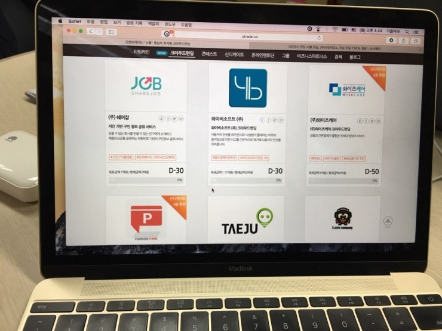
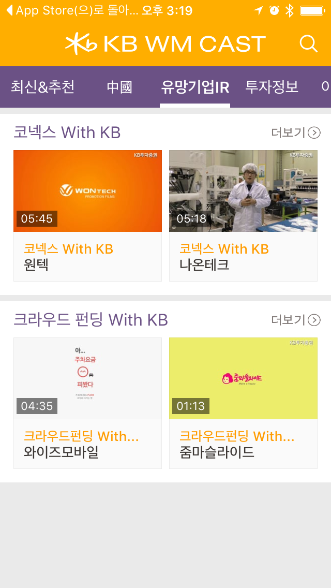

2016-1-26
KB금융그룹(www.kbfg.com 회장 윤종규)는 자본시장법 개정을 1월 25일부터 허용되는 증권형 크라우드펀딩과 매칭투자를 결합한 신개념 핀테크 Start-up 투자 프로그램을 시행일에 맞춰 개시합니다.
이 프로그램은 KB핀테크HUB센터가 발굴한 핀테크 Start-up을 오픈트레이드(대표 고용기)의 크라우드펀딩 플랫폼을 통해 소개하여 일반 투자자의 투자를 유치하고 기준금액 펀딩에 성공하면, KB투자증권에서 동일 금액의 투자를 제공하는 방식입니다.

1월25일 부터 “모비틀, 와이즈모바일, 와이즈케어, 더페이”등 총 4개의 핀테크 Start-up이 순차적으로 오픈트레이드 홈페이지를 통해 일반 투자자들의 청약을 받기 시작합니다.
지난해 8월 핀테크 생태계 조성 협력을 위해 KB금융그룹과 MOU를 체결한 바 있는 오픈트레이드와 협업을 통해 국내에서 처음 시도되는 방식으로써, 매출 실적이나 보유 기술만으로 평가 검증이 어려운 Start-up의 투자에 크라우드펀딩의 집단 지성을 통한 사업성 검증과 매칭투자를 결합한 신개념 투자모델입니다.
KB투자증권을 이크라우드펀딩 모델을 IPO/유상증자/M&A/PI투자 등 증권사 ECM(Equity Capital Market)시장의 잠재적 유망 업체 발굴 채널로도 활용할 계획입니다.특히, KB투자증권은 자체 자산관리 미디어 채널인 WM CAST와 연계해 업체들의 온라인 홍보를 지원하고, 자사 고객들에게 Start-up투자정보를 제공할 계획입니다.

크라우드펀딩은 지난해 7월 6일 국회 본회의를 통과한 “자본시장과 금융투자업에 관한 법률 제정안”에 의해 허용되었고, 이를 통해 Start-up은 연간 7억원까지 자본을 모을 수 있게 되었습니다. 일반 투자자는 한 회사당 200만원, 연간 총 500만원까지, 소득증빙 투자자는 한 회사당 1,000만원, 연간 총 2,000만원까지 투자가 가능합니다. 투자를 원하는 경우, 증권회사의 계좌를 개설한 후 오픈트레이드 홈페이지(http://otrade.co)